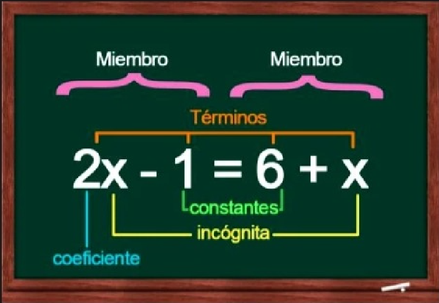
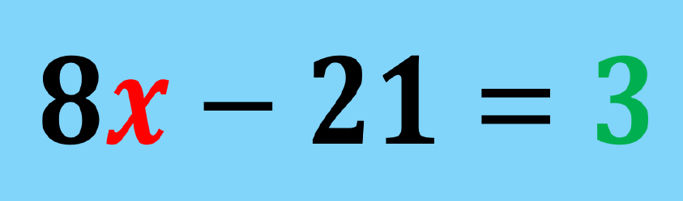
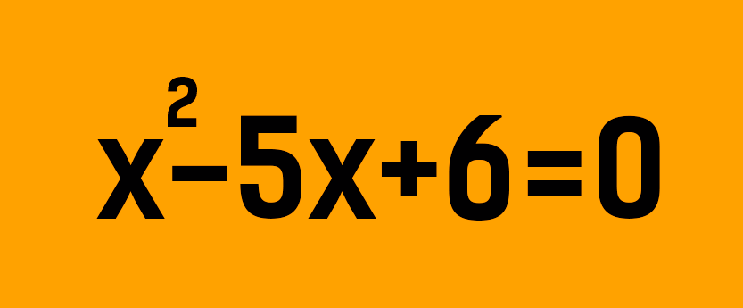
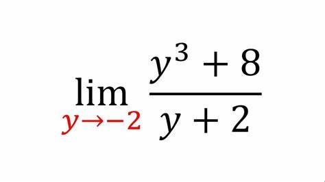
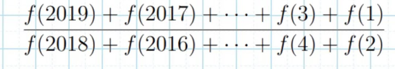
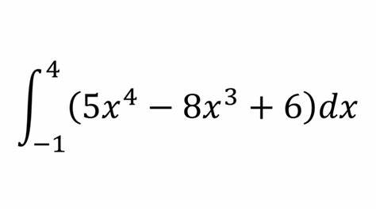
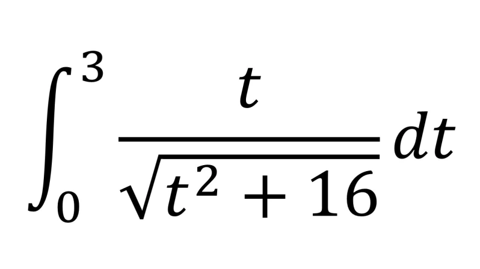

Las ecuaciones estan formadas por diferentes elementos. Veamos cada uno de ellos.
- Cada ecuación tiene dos mienbros, y estos se separan mediante el uso del signo igual (=)
- Cada miembro está conformado por términos, que corresponden a cada uno de los monomios
- Los valores de cada monomio de la ecuaciom pueden ser de diferente tenor. Por ejemplo:
- Constantes
- Coeficientes
- Variables
- Funciones
- Vectores
Las incognitas, es decir, los valores que se dean encontrar, se representan con letras. Veamos un ejemplo de ecuación:

Tipos de Ecuaciones
Existen tipos de ecuaciones de acuerdo a su función.
- Ecuaciones algebraicas:
- Ecuaciones de primer grado o ecuaciones lineales: Son las ecuaciones que involucran una o mas variables a la primera potencia y no presenta producto entre variables.Ejemplo:

- Ecuaciones de segundo grado o ecuaciones cuadráticas: En este tipo de ecuaciones, el término desconocido está elevado al cuadrado. Por ejemplo:

- Ecuaciones de tercer grado o ecuaciones cúbicas : En este tipo de ecuaciones, el término desconocido está elevado al cubo. Por ejemplo:
- Ecuaciones trascendentes
- Son un tipo de ecuaación que no se puede resolver solo mediante operaciones algebraicas, es decir, cuando incluye almenos una función no algbraica. Por ejemplo:

- Ecuaciones funcionales
- Son aquellas cuya incognita son una función de una variable. Por ejemplo:

- Ecuaciones integrales
- Aquella que la función se encuentra en el integrando.
- Ecuaciones Diferenciales
- Aquellas que ponen en relación a una función con sus derivadas.Por ejemplo:
